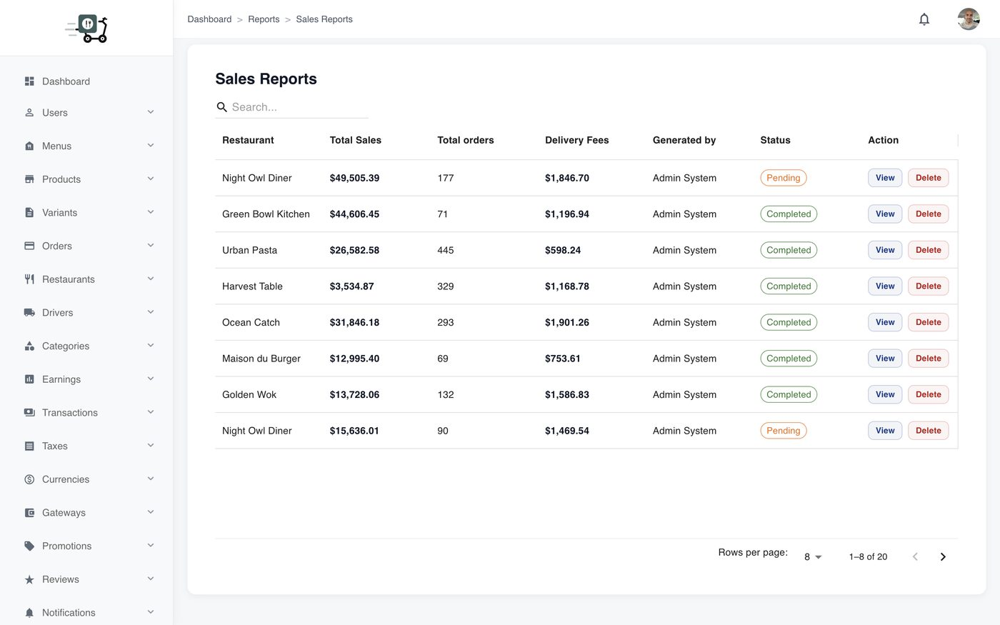
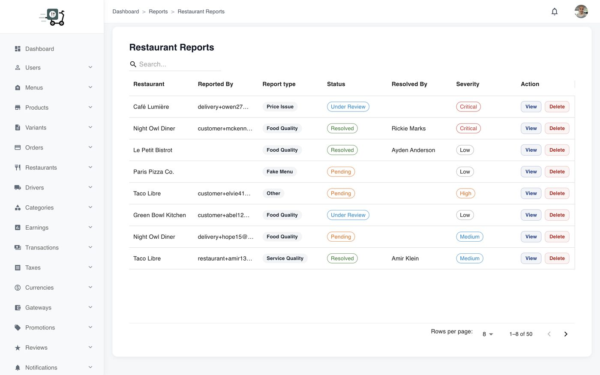
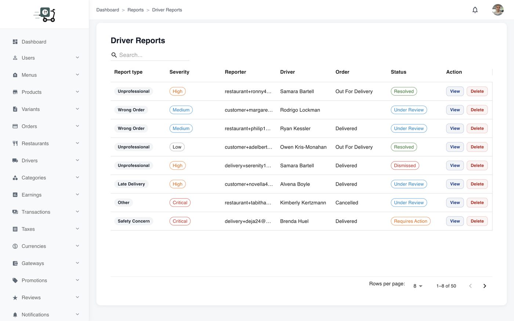
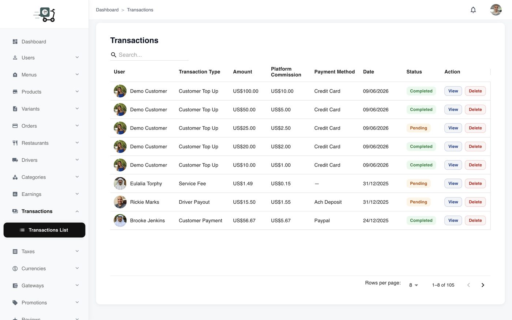

Reports & analytics
Sales, restaurant, and driver reports so you can prove performance — not guess from a single dashboard card.
Prove what the marketplace earned
Reports turn operational noise into decisions: sales with AOV, delivery fees, taxes collected, and category breakdowns; restaurant and driver performance for partner conversations; and the money ledger (transactions) when you need fee-level transparency on payments, payouts, refunds, tips, and wallet movements.
Use earnings under Monetization for commission splits; use reports when you need period analytics and partner scorecards.
Weekly operator rhythm
- Open Sales reports for the period you care about.
- Check restaurant and driver reports for outliers (late deliveries, weak acceptance, top performers).
- Spot-check Transactions when a payout or refund is disputed.
- Export or screenshot what your finance process needs (depending on your deployment tools).

Sales reporting

Restaurant performance

Driver performance

Money ledger / transactions